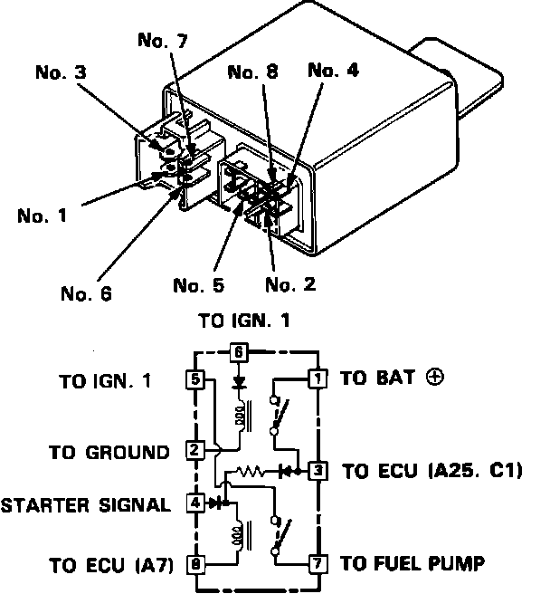

Main Relay (Computer/Fuel System): Testing and Inspection
Main Relay Test:

1. Remove the main relay (located behind right seat next to ECU).
2. Use a 12 volt battery as a power source. Attach the positive battery lead to the No.4 terminal and the negative battery lead to the No.8 terminal. Use an Ohm meter to check continuity between the No.5 and No.7 terminals.
^ If there is continuity, go to step 3.
^ If there is no continuity, replace the relay and retest.
3. Attach the positive battery lead to the No.6 terminal and the negative battery lead to the No.2 terminal. Use an Ohm meter to check continuity between the No.1 and No.3 terminals.
^ If there is continuity, go to step 4.
^ If there is no continuity, replace the relay and retest.
4. Attach the positive battery lead to the No.3 terminal and the negative battery lead to the No.8 terminal. Use an Ohm meter to check continuity between the No.5 and No.7 terminals.
^ If there is continuity, the relay is OK.
^ If there is no continuity, replace the relay and retest.
^ If the fuel pump still doesn't operate, refer to COMPUTERIZED ENGINE CONTROLS.